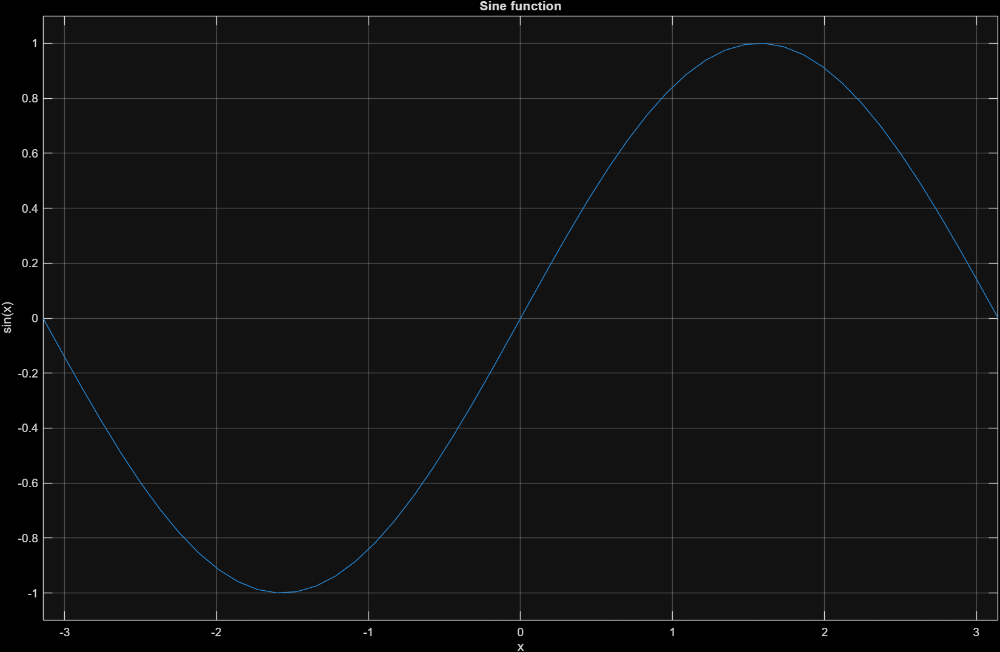
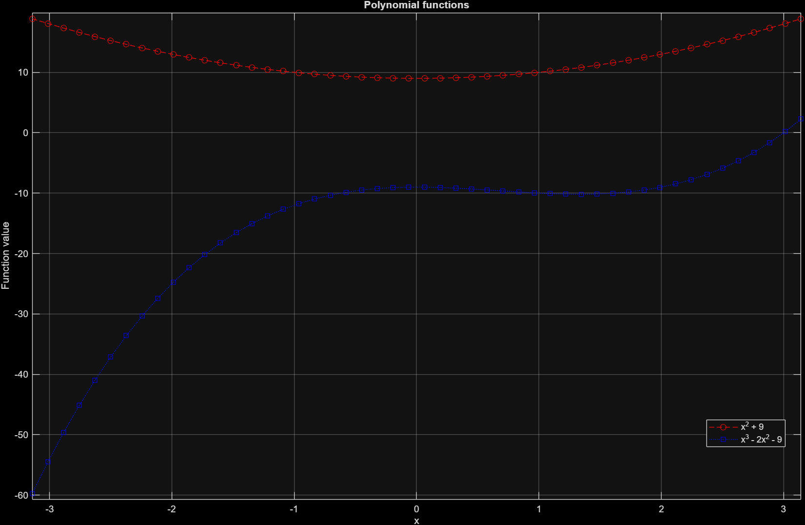
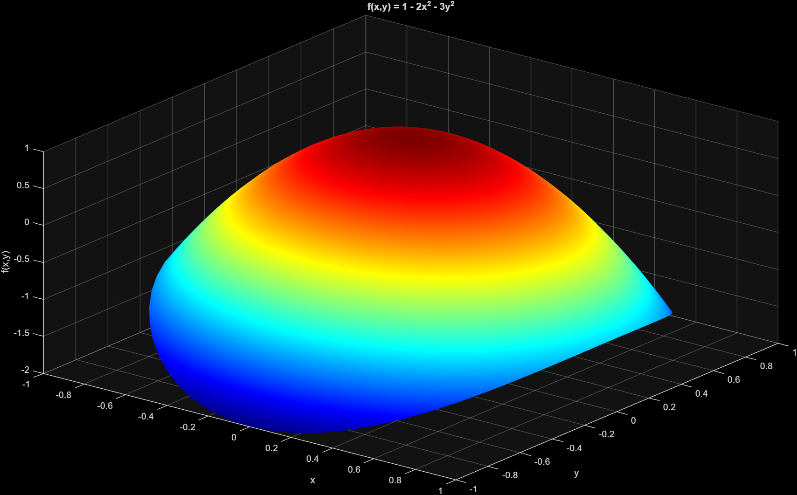

Portfolio
Graphs generated in MATLAB from my completed LW3 and LW4 assignments.


Sine function
LW3: sin(x) over the interval from −π to π.
Open full-size graph

Polynomial functions
LW3: comparison of x² + 9 and x³ − 2x² − 9.
Open full-size graph

Surface over a unit disk
LW4, variant 1: f(x,y) = 1 − 2x² − 3y².
Open full-size graph